Testing and Validation
Proving the barrier and the transfer function: Hi-Pot test procedures and their pitfalls, isolation resistance measurement, bench CTR characterization, EMC validation of isolated interfaces, thermal testing, and economical production test strategies.
Illustrations and animations are original teaching drawings, not to scale. Values marked representative are typical of common parts; always confirm against the current datasheet or standard you design to.
A coupler datasheet proves the component. It says nothing about your creepage, your flux residue, your Y-capacitors or the 2 kV burst that couples in through a 20 m sensor cable. Validation is layered: each level proves something the level below cannot, and the cost per test rises as you go up.
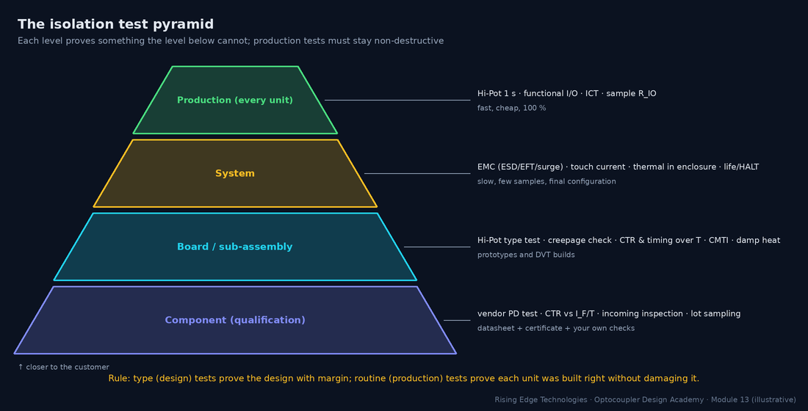
| Type (design) test | Routine (production) test | |
|---|---|---|
| Purpose | Prove the design meets the standard with margin | Prove each unit was built correctly |
| Samples | A few units, often pre-conditioned (damp heat, thermal cycling) | Every unit (100 %) |
| Hi-Pot example | Full level for ~60 s | Same level for ~1 s (or as the standard allows) |
| Destructive? | May be; the units are scrapped afterwards | Must not degrade the unit that ships |
| Examples | Hi-Pot, PD, EMC, thermal, touch current, CMTI, life test | Hi-Pot, functional I/O, ICT, sample RIO |
A Hi-Pot test applies a voltage far above the working voltage across the insulation for a defined time and checks that nothing breaks down. It does not measure lifetime or partial discharge: a barrier can pass Hi-Pot and still age from PD at working voltage (that is what the PD test in Section 4 is for).
AC test
Stresses the insulation like mains does, including PD at peaks. Capacitive current flows through Y-caps and the barrier capacitance, so the tester sees current even with perfect insulation.
DC test
No capacitive current once charged, so leakage is easy to see and Y-caps don’t trip it. The equivalent DC voltage is the AC peak. The DUT stores charge and must be discharged afterwards.
Ramp
Raise the voltage gradually (seconds, not instantly) so the charging current and any overshoot don’t cause false trips or overstress.
Dwell
The time at full voltage: typically 60 s for type tests and about 1 s for routine tests. Take the actual times from your standard.
Trip current
The tester removes the voltage when the current exceeds this. Set it above the normal (capacitive plus leakage) current but low enough to catch a breakdown.
Arc detection
Some testers flag short, high-frequency current bursts (flashover or corona) that never reach the trip level.
- VAC,rms: specified AC test voltage (Vrms); VDC,eq: equivalent DC test voltage (V)
- f: test frequency (50 or 60 Hz); C: total capacitance across the barrier (F): Y-caps plus the coupler’s CIO (≈ 0.5–1 pF each)
- IC: capacitive current the tester sees with perfect insulation (Arms)
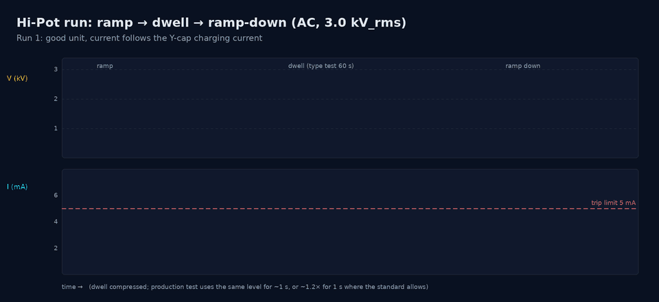
Worked example — AC or DC for a board with Y-caps?
A 230 V mains SMPS has 2 × 2.2 nF Y-caps in parallel across the barrier (4.4 nF). The end-product standard calls for a representative 3000 Vrms between primary and SELV.
- Capacitive current at 50 Hz: IC = 2π × 50 × 4.4 nF × 3000 V = 4.1 mA.
- A typical 5 mA trip gives only 0.9 mA of margin; at 60 Hz (4.98 mA) it trips a good board.
- DC alternative (if the standard allows it): 1.414 × 3000 = 4243 V DC. Once charged, the current is only leakage (nA to µA), so a trip of 0.1–0.5 mA is meaningful.
- Stored energy after the DC test: ½ C V2 = ½ × 4.4 nF × 42432 ≈ 40 mJ. That is a painful shock, so discharge before touching.
Getting the connections right matters as much as the voltage. Every pin on each side is shorted together so the full voltage appears only across the insulation under test, never across a single junction inside the coupler or across another part.
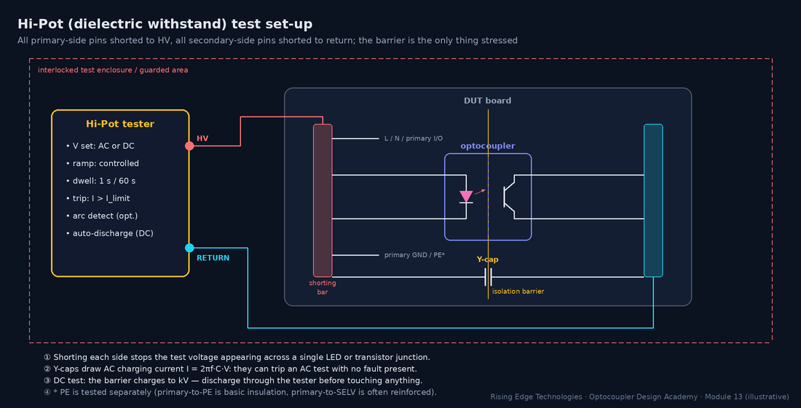
Procedure
Routine Hi-Pot on an isolated board
- Guard: interlocked fixture or enclosure, two-hand start or light curtain, HV warning lamp. Only trained operators.
- Short all primary-side nets to HV and all secondary-side nets (and SELV connectors) to return. Test primary–PE separately where it is a different insulation class.
- Verify the tester with a known-good and a known-bad reference (a “fail” resistor) at the start of each shift.
- Ramp to the test voltage, dwell, ramp down. Record voltage, time, maximum current and pass/fail with the serial number.
- Discharge (automatic in most DC testers) and confirm 0 V before releasing the fixture.
Stored charge
After a DC test, Y-caps and bulk caps can hold kV. Use the tester’s discharge function and a grounding stick in the lab.
Repeated tests
Each full-level test stresses the barrier. Standards and vendors generally recommend a reduced level (often around 80 %) for retests after rework.
Surge suppressors
MOVs, TVS diodes and spark gaps from line to PE will conduct during a Hi-Pot test. They are usually disconnected for the test, as the standard allows.
Wrong sides shorted
Forgetting one secondary net leaves it floating: it charges through stray capacitance and may arc to a neighbour, a false fail or real damage.
The simplified rule reproduces the familiar 1.5 kVrms basic / 3 kVrms reinforced levels for 230 V mains, but modern standards (IEC 62368-1, IEC 61010-1, IEC 60601-1) derive test voltages from tables of peak working voltage, transient overvoltage and insulation class. Use their tables. See Module 16.
Partial discharge (PD) is what slowly kills a barrier at working voltage (Module 12, Section 7). A Hi-Pot test cannot see it; a PD test can. The measurement follows IEC 60270: a coupling capacitor and measuring impedance detect the tiny charge pulses, reported as apparent charge in picocoulombs (pC).
Inception voltage
The voltage at which PD starts as you raise the voltage. It must be comfortably above the peak working voltage.
Extinction voltage
The voltage at which PD stops as you lower it again. It is usually lower than inception, which is why the test goes down to the measurement level after a higher stress.
Threshold
Optocoupler datasheets typically quote a PD limit of about 5 pC at the test level.
Who tests
For couplers certified to IEC 60747-5-5, the vendor PD-tests 100 % of parts. Board-level PD testing needs a shielded set-up and is mostly done for high-voltage designs (drives, PV, medical).
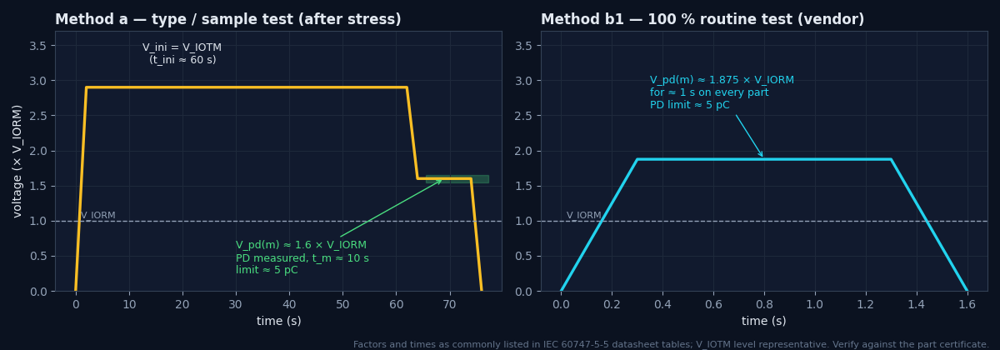
- VIORM: maximum repetitive peak working voltage the barrier is certified for (Vpeak)
- F: test factor; about 1.875 for the 100 % routine test (method b1, 1 s) and about 1.6 for the sample test after environmental stress (method a, 10 s), as commonly listed on datasheets
- qpd: apparent charge (pC)
Worked example — reading the PD figures
A gate-drive coupler lists VIORM = 891 Vpeak.
- Routine (every part): 1.875 × 891 ≈ 1671 Vpeak for 1 s, PD < 5 pC.
- Sample (after stress): 1.6 × 891 ≈ 1426 Vpeak for 10 s, PD < 5 pC.
- Your peak working voltage must not exceed 891 Vpeak, including DC-link ripple and switching overshoot (Module 9).
An insulation-resistance test (“megger” test) applies a moderate DC voltage, typically 500 V or 1000 V DC, and reports resistance. It is non-destructive, gives a number you can trend, and is very sensitive to contamination and moisture. It complements Hi-Pot: Hi-Pot proves withstand; IR shows surface and bulk quality.
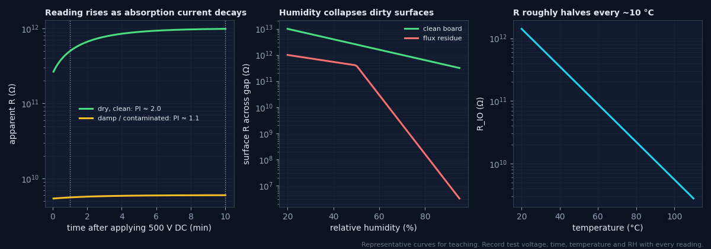
Read at a fixed time
The reading rises for minutes as absorption current decays. Use 60 s unless your procedure says otherwise. The ratio R10 min/R1 min (polarisation index) above about 2 indicates dry, clean insulation.
Use the guard terminal
To measure the coupler bulk and not the board surface (or the reverse), connect the megger’s guard to a ring around one side to divert surface current.
Humidity dominates
Clean boards lose perhaps one decade from 20 % to 90 % RH; flux-contaminated ones lose several. A low reading at high RH that recovers after drying means a surface problem.
Temperature
Bulk resistance roughly halves for every ~10 °C rise (representative). Compare readings only at similar temperatures, or correct them.
Worked example — why a medical design fails on Y-caps, not couplers
- 4 couplers at 50 GΩ each in parallel = 12.5 GΩ. At 230 V: 18 nA resistive leakage, which is negligible.
- A 2.2 nF Y-cap at 230 V, 50 Hz: 2π × 50 × 2.2 nF × 230 = 159 µA.
- That exceeds a representative 10 µA CF limit sixteen-fold. The fix is to remove the Y-cap across the patient barrier (and solve EMI another way), not to change the coupler.
Datasheet curves are typical. Before committing to a design you should characterise a few parts yourself: it catches wrong ranks and counterfeit parts, and gives you data at your operating point, which is rarely the datasheet’s 5 mA / 5 V test condition.
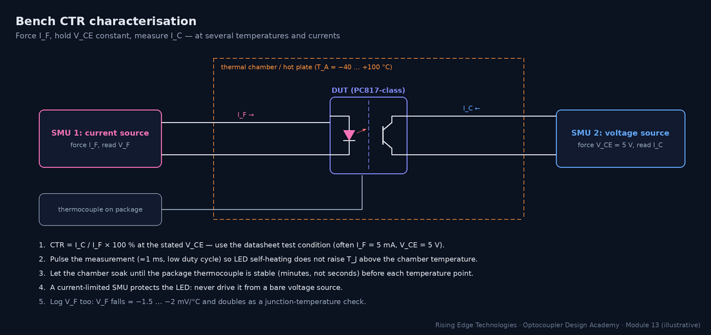
- IC: collector current measured with VCE held constant (mA)
- IF: forced LED current (mA)
- VCE: collector–emitter voltage, typically 5 V (V); TA: chamber temperature (°C)
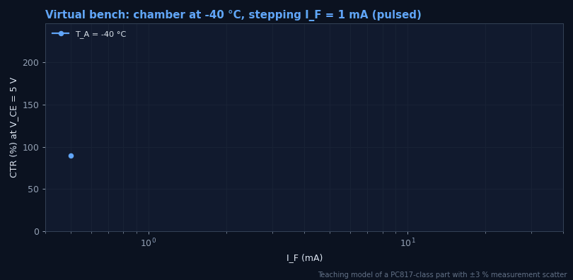
Worked example — incoming check of a CTR rank
You receive PC817C parts (rank C: 200–400 % at IF = 5 mA, VCE = 5 V, 25 °C). Five samples read IC = 11.8, 13.1, 12.4, 9.1 and 12.9 mA at 5 mA.
- CTR = 236, 262, 248, 182, 258 %.
- One part is below the rank’s 200 % floor. Re-measure (check VCE, temperature, pulse timing); if it is confirmed, quarantine the lot and ask the distributor for traceability.
- A consistent shift of all samples by a fixed factor often points to a set-up error (wrong VCE, self-heating). A single outlier points to the parts.
Timing and common-mode tests validate the dynamic side of the interface. Both are very sensitive to the fixture: a 10 cm ground lead on a scope probe can add more ringing than the part produces.
| Parameter | How to measure | Pitfalls |
|---|---|---|
| tPHL, tPLH | 50 % input to 50 % output (or the thresholds in the datasheet test circuit), at the datasheet RL and CL and at your own | Probe capacitance adds to CL; use ≤ 10 pF active or low-C passive probes |
| PWD (|tPHL − tPLH|) | Same set-up; measure both edges, over temperature and supply | PWD changes with LED current and temperature; check the worst corner |
| tr, tf | 10–90 % of the output swing | Phototransistor fall/rise depend on RL (Miller effect, Module 4) |
| CMTI | Common-mode pulse between the two grounds; output monitored for a glitch | Scope must be referenced to the output side only; measure dV/dt at the DUT pins |
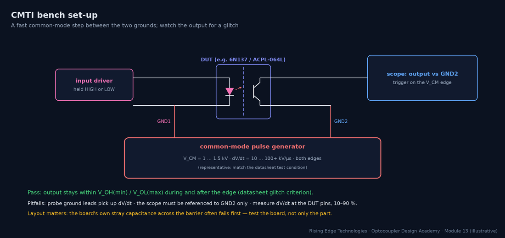
- VCM: common-mode pulse amplitude (V)
- t10–90: 10–90 % rise (or fall) time of the pulse measured at the DUT (s)
- Result usually quoted in kV/µs
Worked example — is the test hard enough?
Your SiC inverter switches 800 V in 20 ns (10–90 %), which is 0.8 × 800 / 20 ns = 32 kV/µs at the gate-drive barrier. The lab pulse generator gives 1.2 kV with a 40 ns rise.
- Generator dV/dt = 0.8 × 1200 / 40 ns = 24 kV/µs, which is less than the application.
- The test cannot prove the requirement. Use a faster generator or a smaller fixture capacitance, or validate in the real inverter with a differential probe and output-glitch monitoring.
- Aim for at least 2× the application dV/dt in the test, which suits a coupler rated ≥ 50 kV/µs (e.g. ACPL-332J / TLP5214-class; check the datasheet).
EMC testing is where isolated interfaces are exposed to real-world abuse. The barrier capacitance (CIO plus layout) gives fast common-mode transients a path across; long cables deliver them. The basic standards define the waveforms; the generic or product standards (e.g. IEC 61000-6-1 / -6-2, or a product-family standard) set the levels and performance criteria.
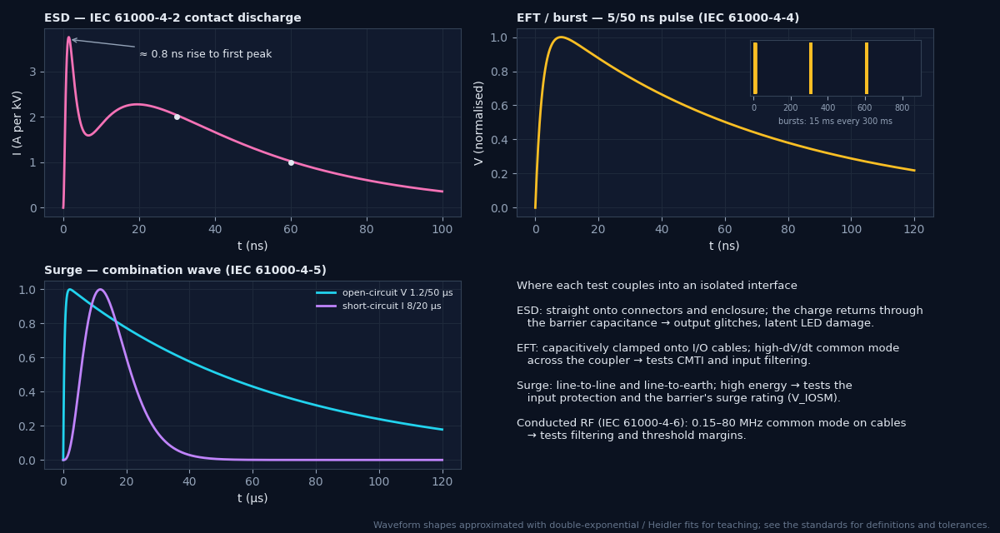
| Basic standard | Test levels 1 / 2 / 3 / 4 (open-circuit) | Coupling |
|---|---|---|
| IEC 61000-4-2 ESD | contact 2 / 4 / 6 / 8 kV; air 2 / 4 / 8 / 15 kV | Direct to touchable points; indirect via coupling planes |
| IEC 61000-4-4 EFT/burst | power 0.5 / 1 / 2 / 4 kV; signal 0.25 / 0.5 / 1 / 2 kV | CDN on power; capacitive clamp on I/O cables |
| IEC 61000-4-5 surge | 0.5 / 1 / 2 / 4 kV | Line–line (2 Ω) and line–earth (12 Ω) via CDN |
Level summary for orientation; the standards define tolerances, set-ups and additional levels. Check the edition you test to.
Criterion A
Normal performance within specification during and after the test.
Criterion B
Temporary degradation or loss of function during the test that recovers by itself afterwards; no change of stored data or operating mode.
Criterion C
Temporary loss of function that needs operator intervention or a system reset.
Criterion D
Loss of function that is not recoverable (damage). Never acceptable.
Optocoupler ageing depends on LED junction temperature (Module 9), so validate the temperature in the real product: enclosure closed, maximum ambient, worst-case load, after thermal equilibrium (typically 1–2 h for a closed enclosure).
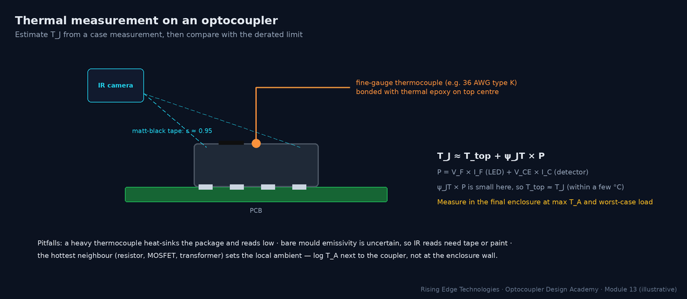
- Ttop: measured package top temperature (°C)
- ψJT: junction-to-top characterisation parameter (°C/W; representative 20–50 °C/W for small packages, often not published; see JEDEC JESD51)
- P: total dissipation (W): LED plus output transistor
Thermocouple choice
Fine gauge (36–40 AWG), bead bonded with thermally conductive epoxy. A heavy thermocouple heat-sinks the package and reads low.
IR camera
Put matt-black tape or paint (ε ≈ 0.95) on the part, or calibrate emissivity against a thermocouple.
VF as a thermometer
Calibrate VF at a small pulsed current against chamber temperature (≈ −1.5 to −2 mV/°C), then read it in-circuit to get the LED junction temperature directly.
Report
Log TA next to the part, the enclosure and airflow state, load, and time to equilibrium.
Production testing must catch assembly defects on every unit, quickly and without degrading the product. Design for test at schematic stage: test points on both sides of the barrier, a way to drive each isolated input, and a way to read each isolated output.
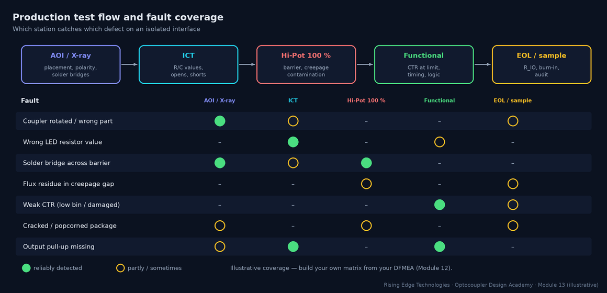
| Test | Coverage | Typical time | Notes |
|---|---|---|---|
| AOI / X-ray | Placement, polarity, solder bridges, lead-frame bridges under the part | seconds | Catch a rotated coupler before Hi-Pot |
| ICT | Component values, opens/shorts; LED VF via test pads | seconds | Needs pads on both sides; the barrier breaks the fixture’s ground reference |
| Hi-Pot (routine) | Barrier breakdown, bridges across creepage, contamination at high field | 1–3 s | Mandatory in many safety standards for mains-connected equipment |
| Functional | Transfer at the limit: drive the input at minimum IF, check the output switches | seconds | The only test that catches a weak CTR on the board |
| Sample IR / burn-in | Process drift, contamination trend, early-life failures | minutes–hours | Sampling detects trends, not individual bad units |
Worked example — a functional test that screens CTR
A PLC input must switch at 15 V with an end-of-life CTR of at least 60 %. The production test drives the input at the threshold condition, not at 24 V.
- Apply 15 V (not 24 V) so IF is at its design minimum.
- Check the output logic level is valid with the maximum pull-up resistor tolerance simulated (or accept a guard-banded limit on the output voltage).
- A unit with a low-rank or damaged coupler fails here, though it would pass a 24 V go/no-go test.
Pull everything together in a design-verification (DVT) matrix: one row per requirement, one test per row, a numeric pass criterion, a sample size and a link to evidence. It becomes the core of your certification file (Module 16).
| Requirement | Test | Samples | Pass criterion (example) | Evidence |
|---|---|---|---|---|
| Reinforced insulation, 230 V mains | Hi-Pot type test after humidity conditioning | 3 boards | No breakdown at the standard’s level for 60 s | Test report + photos of set-up |
| Barrier working voltage | Review VIORM, creepage/clearance measurement | Design + 1 board | VIORM ≥ peak VW; creepage ≥ required | Certificate + measurement record |
| Leakage / touch current | Measure at 1.1 × mains, 60 Hz | 3 units | < limit of end-product standard | Report |
| CTR at end of life | Bench CTR at Tmin/Tmax; functional at threshold | 10 parts / 3 boards | Margin ≥ ageing factor from Module 9 | Data file + plots |
| Timing / PWD | Scope measurement over temperature | 5 boards | PWD < budget; tP < spec | Scope captures |
| CMTI | Common-mode pulse test / in-system | 3 boards | No glitch at ≥ 2× application dV/dt | Captures |
| EMC immunity | ESD, EFT, surge, conducted RF per product standard | 1–2 systems | Criterion A/B as required | Accredited lab report |
| Thermal | Thermocouple at max TA, closed enclosure | 2 systems | TJ ≤ derated limit − 10 °C | Report |
Layered proof
Component data, board type tests, system EMC/thermal and production tests each prove something different.
Type vs routine
Type tests prove the design with margin; routine tests prove each unit without damaging it.
AC vs DC Hi-Pot
DC equivalent = 1.414 × ACrms. AC current includes Y-cap charging; DC hides it but stores energy.
Connections
Short all pins on each side; test each barrier separately; discharge afterwards.
Hi-Pot ≠ PD
Withstand does not prove freedom from partial discharge; the vendor’s PD test covers the coupler.
IR needs context
Record voltage, time, temperature and RH. Humidity collapses dirty surfaces.
Characterise CTR
Pulsed, at your operating point and at temperature extremes.
Instrument EMC tests
Monitor the isolated channel to claim criterion A or B honestly.
Test at threshold
Functional production tests at the minimum drive condition screen weak couplers.
Design checklist
Tick items as you review a design. Your ticks are saved in this browser only; use your browser’s print function for a sign-off copy.
Four parts: multiple choice, true/false, a matching exercise and engineering scenarios. Score 80 % on the multiple choice to pass the module.